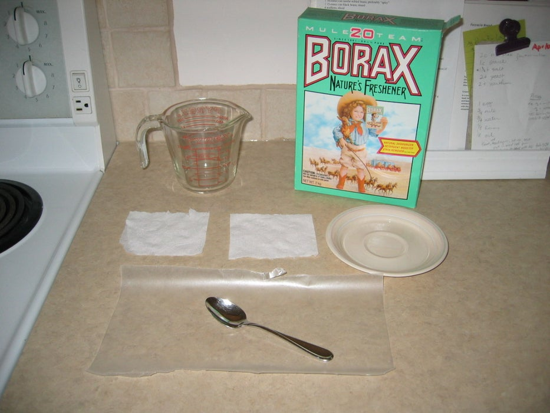

HOW TO MAKE A ROCKET MODEL
Love launching model rockets but don't love the cost?
Here's a way to cut costs a bit by making your own recovery wadding
The point of the recovery wadding is to provide a shield between the recovery charge from the engine (hot gases and sparks) and the parachute or other recovery system for the reason of preventing damage to your rocket and/or on board fires Recovery wadding is just fireproof paper
This does NOT require any special tools or materials that are not found in the average household
This sells at hobby shops for about 8 dollars for 75 sheets You can make over 100 sheets for under 1 dollar
Step 1: What You Need
- Saucer
- Toilet paper (as many sheets as sheets of wadding you want)
- Wax paper
- Borax or baking soda
- Water
- Measuring cup
- Spoon
Step 2: Make a Saturated Solution